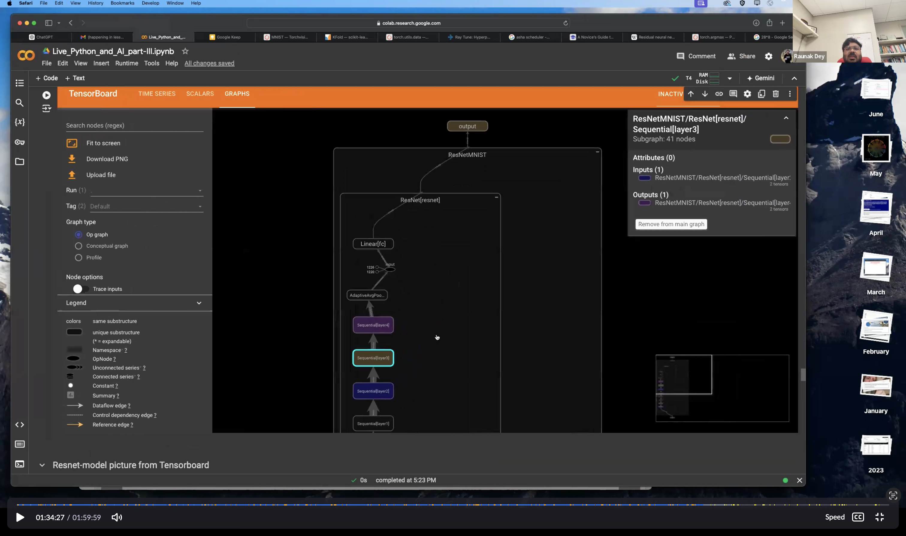

{% assign publication_posts = site.posts | contains: 'categories', 'publications' %}
<div id="teaching" class="container py-5">
    <h2 class="section-title text-center">Teaching and Bootcamp</h2>

    <div class="teaching-item">
        <div class="teaching-content">
            <h3>Pytorch for AI</h3>
            <p class="teaching-meta">
                <strong>Instructors:</strong> Raunak Dey <br>
                <strong>Links:</strong> <a href="https://umd.zoom.us/rec/play/HLlj215yyMbcF5eMvP6boTe4gBWa5x7GZjjQTzUL503Dfs0wTcwG6xizrntLo6Cz8PJAJ--7c-r9F4xC.0d1-V6EnL2PiYKyj?canPlayFromShare=true&from=share_recording_detail&continueMode=true&componentName=rec-play&originRequestUrl=https%3A%2F%2Fumd.zoom.us%2Frec%2Fshare%2F3JNiO-cMs8iCj4SRclp-djY6844_Z4PDT1gkXZ70J7WNoOdTJrDvi0J4FRVmBQ.fc717_wmJusS5Wdl" target="_blank">Video Lecture</a>; 
              <a href="https://colab.research.google.com/drive/1n9xGu52qzMUzgDOjt9pKSMwTjHXThhHW?usp=sharing%5D%2F" target="_blank">Colab Notebook</a>; <a href="https://scotch.wangyq.net">Course Webpage</a>
            </p>
            <p class="teaching-description"> A summer bootcamp on scientific computing for beginners with Python and Pytorch organized by <a href="https://sites.google.com/site/pratyushtiwary/">Pratyush Tiwary</a>, University of Maryland.</p>
        </div>
        <div class="teaching-img">
            
        </div>
    </div>

    <div class="teaching-item">
        <div class="teaching-content">
            <h3>Intro Physics I, II</h3>
            <p class="teaching-meta">
                <strong>Venue:</strong> Georgia Tech <br>
                <strong>Instructors:</strong> Ed Greco, Emily Alicea-munoz, Raunak Dey (GTA)<br>
                <strong>Course ID:</strong> PH2211, PH2212<br>
            </p>
            <p class="teaching-description">This introductory Physics course introduces programming and goal-driven problem solving tailored for physicists, covering topics from basic mechanics to electromagnetism with hands-on problems solving sessions.</p>
        </div>
        
    </div>

    <div class="teaching-item">
        <div class="teaching-content">
            <h3>Intermetiate Quantum Mechanics Mechanics</h3>
            <p class="teaching-meta">
                <strong>Venue:</strong> IISER Kolkata <br>
                <strong>Instructors:</strong> Soumitro Banerjee, Raunak Dey<br>
                <strong>Course ID:</strong> PH3105<br>
            </p>
            <p class="teaching-description">A deep dive into the advanced concepts of quantum mechanics, emphasizing modern research methods and computational techniques.</p>
        </div>
        
    </div>

    <!-- Add more teaching items as needed -->
</div>
